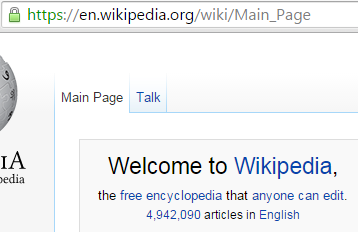
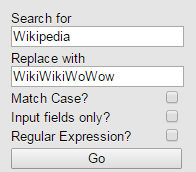
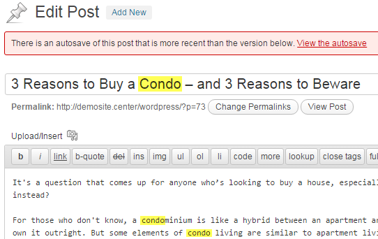
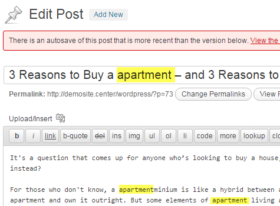
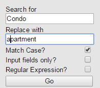
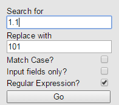
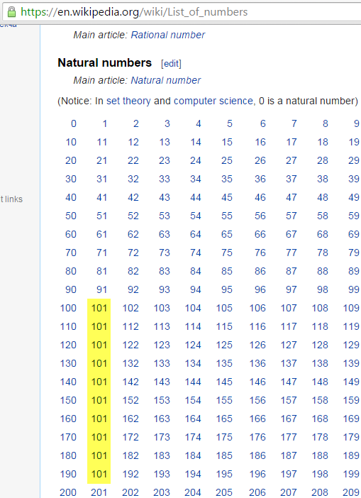

Basic Usage
To replace text that is not contained within an input box you can leave all boxes unchecked
Before
Setup
Enter the exact text to be replaced without checking any of the boxes.

After

Notice that an image link has broken on the page. This is because the tool replaces text throughout the entire HTML.

Replacing text in editors
To replace text in the Wordpress article box or in other input boxes you should check the "Input boxes?" check box. Otherwise the search text will be replaced throughout the entire HTML, possibly breaking the page.
Before
Setup

After
Matching the case of text
If you need to replace THIS but not This then you should use the match case option.
Before
Setup
After

Wild Cards and Regular Expressions
If you need to match a partial search term then you should check the Regular Expressions check box and specify a wild card. You will need to have a very basic knowledge of regular expressions to use this feature. I recommend regexpal for testing
Before

Setup
After
Issues
- Remember to REFRESH the page on which you wish to replace text after the initial installation.
- Pressing Enter will Replace All. There is no shortcut keyboard for Replace Next.
- If you find a bug, please provide a detailed report here